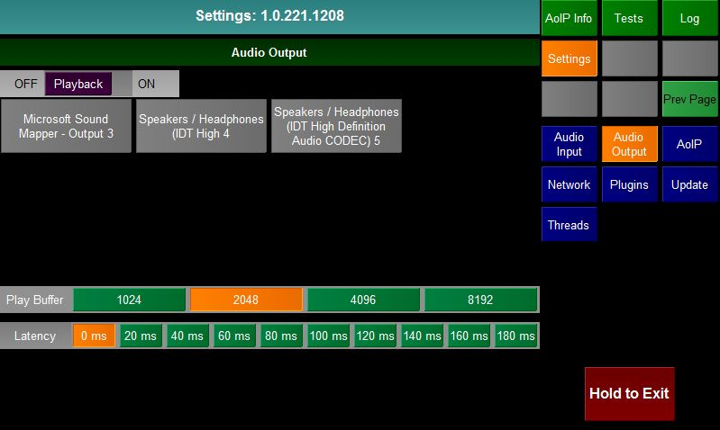
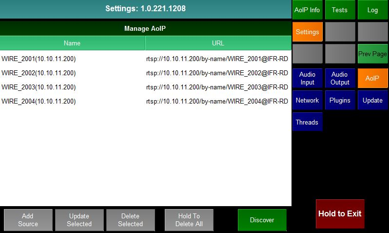
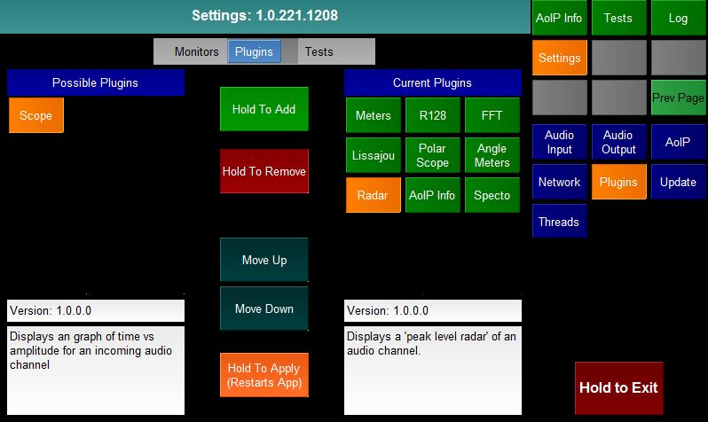
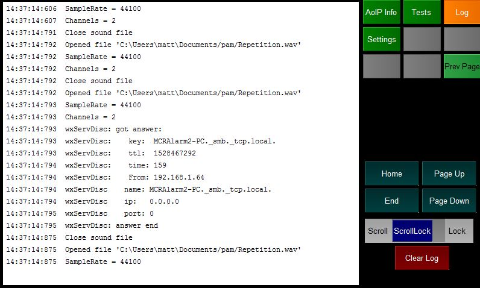

PiAudioMonitor is a suite of audio monitoring tools designed to run on a Raspberry Pi with the official Pi Touchscreen. The software will also run on other flavours of Linux and Windows.
The hardware parts that make up the unit can mostly be purchased from RS
There is an ISO available which contains the OS and a preinstalled version of PAM. This is the easiest way of getting started.
On powering on the Raspberry Pi the PAM software will be automatically started.
PAM is based on a plugin infrastructure. There is a core application which deals with audio input and output and hosts plugins that display the monitoring metrics.
There are two types of plugin
The application will startup with the splash screen above whilst the plugins are loaded.
Once eveything is loaded the application will default to the display that it was on when it closed.

The screen is divided in to 4 areas.

Most plugins have the ability to go full screen, hiding the selection buttons as can be seen above with the FFT plugin. Touching the screen will switch between full screen and half screen mode.
There are three built in Screen Selection buttons.
The settings page is built in to the core application. It is always the last Screen Selection button.
It consists of a number of sub-pages which can be selected by pressing one of the Option Selection buttons:

The audio input page allows the user to select what audio source he is monitoring. The page is divided in to two sections. The top list shows the input types and the list below shows all possible inputs of the selected type. The buttons at the bottom are (from left to right) Home, Previous Page, Next Page, End
There are 3 input types
Selecting this will list all possible physical audio inputs to the raspberry pi. If you have the HifiBerry digi+ hat connected then you should select snd_rpi_hifiberry_digi:
Selecting this will list all discovered or manually entered AES67/Livewire/Ravenna sources. You can edit this list by selecting the AoIP settings
Selecting this will list all wav files that are on the unit.

The audio output page allows the user to decide whether he wants the audio that he is monitoring to be played out of the unit and if so the buffer size and latency that should be used.

The AoIP page allows the user to manage the Audio over IP sources that the unit can connect to.
The top of the page lists the sources, showing a user friendly name and the URL.
The buttons on the bottom allow the user to manually Add a new source, Update the currently selected source and Delete the current selected source.
The user can also press and hold the "Hold To Delete All" button to clear the list.
Finally if the Discover button is pressed then the unit will attempt to find AoIP sources that are advertising themselves using DNS-SD or SAP. Press the button again to stop the discovery process.
Pressing the Add Source or Update Selected button will show the AoIP edit page.

The user should enter a friendly Name for the source and the full URL/IP Adress of the source.

The Network page allows the user to set the properties of the wired ethernet connection of the Pi.

The plugins page allows the user to decide which Monitor and Test plugins he wishes to have running in the application and the order that they will appear.
The switch at the top of the screen decides whether the user is looking at Monitor or Test Plugins.
The left hand side of the screen lists all plugins of the relevant type that have not currently been assigned to run in the application. The section below shows the version number and a brief description of the selected plugin.
The right hand side of the screen lists all the plugins of the relevan type that are currently assigned to run in the application. They are listed in the order that they appear on the Screen Selection buttons. The section below shows the version number and a brief description of the plugin.
To Add A New Plugin
To Remove A Plugin
To Change The Position Of A Plugin

The Update screen allows the user to decide in where updates should be retrieved from. There are 4 options
Once the method of updating has been decided the user can press the Check For Updates button to launch the Update Manager.

The Update Manager lists all plugins, core applications and libraries and documentation that either does not exist on the unit or is of a later version.
The user can select one or more items (or use the (De)Select All buttons) and then View the Changelogs for the items, View the Dependencies for the items or simply Update the Selected items.
On pressing Update Selected all the selected items and any dependencies will be updated. Note the application must be restarted for the update to finally take effect.
Changelog

On pressing the View Changelog button the user is presented with a page that lists all the selected items and the changes that have been made to each item.
Pressing the View Changelog button will return the user to the Update Manager screen.
Dependencies

On pressing the View Dependencies button the user is presented with a page that lists all the selected items. Underneath each item is a table showing the libraries (with version number) that this item depends on. Should the user choose to update the item then the depencies will also be updated.
Pressing the View Dependencies button will return the user to the Update Manager screen.

The Log page is built in to the core application. It is always the second to last Screen Selection button.
The log page shows a detailed log of what the application has been up to since it last started. The user can use the Home, Page Up, Page Down and End
to navigate through the log.
If the Scroll Lock switch is set to Scroll then the log will keep refreshing. If set to Lock then the currently display page will remain.
Pressing Clear Log will clear all the log pages.
The Test page is built in to the core application. It is always the third to last Screen Selection button.
The page simply acts as a host page for all Test plugins. When the user selects the Test page the Option Selection buttons will list all the loaded Test plugins and the last selected one will be displayed.